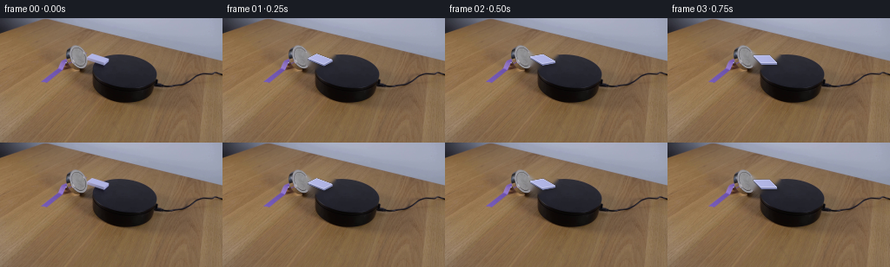
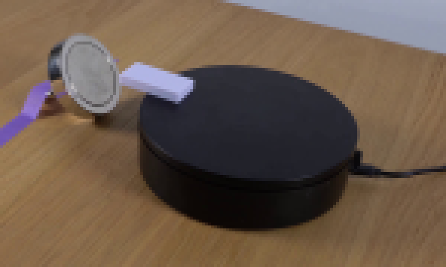
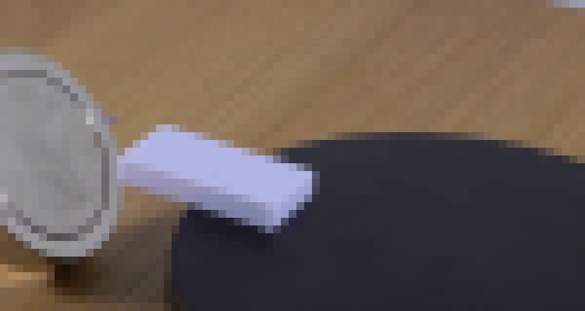
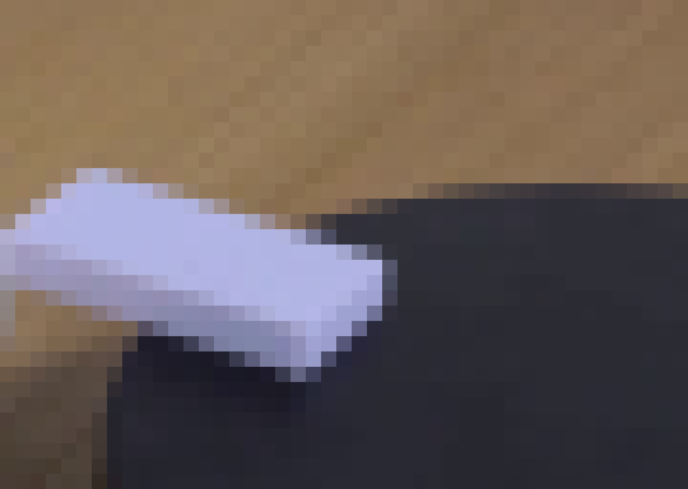
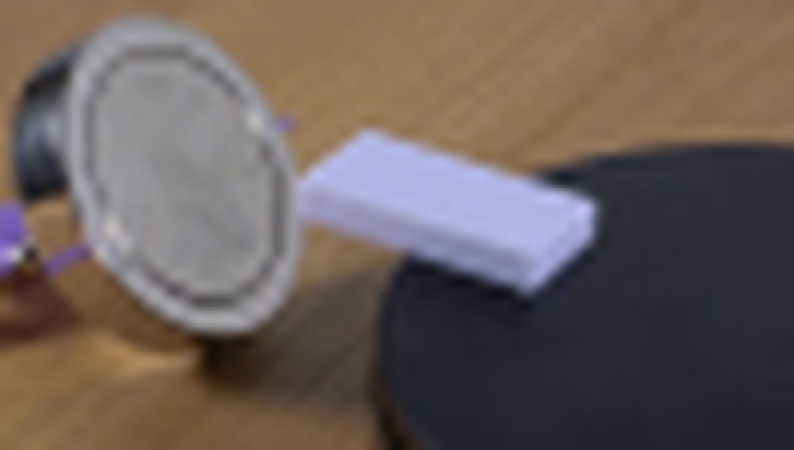
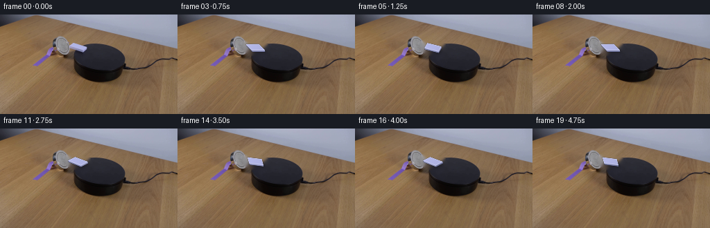
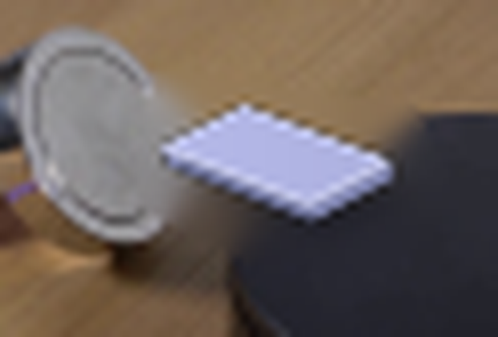
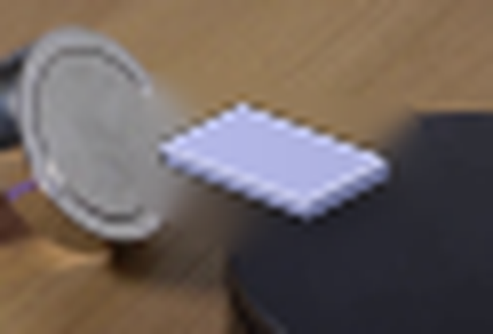
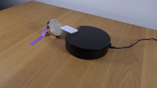

CODING AGENTS AS PIXEL WORLD MODELS
traex/DeepSeek-V4.1-Flash · 0096
点击播放 · 原生 RGB 像素
逐轮保存的候选
回放视频、检查图与代码变化。
每份候选均可单独播放。实际图片检查记录在下方工具轨迹中。
候选 01播放与检查图
点击播放 · 原生 RGB 像素


展开代码变化
--- 上一保存版本
+++ 本次保存版本
@@ -0,0 +1,147 @@
+from pathlib import Path
+
+import cv2
+import numpy as np
+from PIL import Image
+
+import artifact_io
+
+
+ROOT = Path(__file__).resolve().parent
+WIDTH, HEIGHT = 256, 144
+FRAME_COUNT = 20
+FPS = 4
+SUPERSAMPLE = 4
+
+
+def polygon(center, basis_u, basis_v, angle, half_width=0.5, half_depth=0.5):
+ """Project a rectangle rotated in the platform plane into image space."""
+ c, s = np.cos(angle), np.sin(angle)
+ rotation = np.array([[c, -s], [s, c]], dtype=np.float64)
+ corners = np.array(
+ [
+ [-half_width, -half_depth],
+ [half_width, -half_depth],
+ [half_width, half_depth],
+ [-half_width, half_depth],
+ ],
+ dtype=np.float64,
+ )
+ local = corners @ rotation.T
+ return local @ np.vstack((basis_u, basis_v)) + center
+
+
+def rounded_mask(frame, points):
+ mask = np.zeros(frame.shape[:2], dtype=np.uint8)
+ cv2.fillPoly(mask, [np.round(points).astype(np.int32)], 255)
+ return mask
+
+
+def make_clean_plate(frame):
+ """Remove the original domino and its cast shadow from the black top."""
+ mask = np.zeros(frame.shape[:2], dtype=np.uint8)
+ removal_polygon = np.array(
+ [(99, 39), (127, 43), (131, 53), (124, 59), (110, 58), (97, 51)],
+ dtype=np.int32,
+ )
+ cv2.fillPoly(mask, [removal_polygon], 255)
+ mask = cv2.GaussianBlur(mask, (5, 5), 1.0)
+ clean = cv2.inpaint(frame, (mask > 10).astype(np.uint8) * 255, 4, cv2.INPAINT_TELEA)
+
+ # The platform is smooth, so a restrained local low-pass removes inpaint streaks.
+ local = cv2.GaussianBlur(clean, (0, 0), 1.2)
+ roi = mask > 0
+ clean[roi] = local[roi]
+ return clean
+
+
+def draw_body(frame, top_points, angle):
+ scale = SUPERSAMPLE
+ hi_w, hi_h = WIDTH * scale, HEIGHT * scale
+ body = np.zeros((hi_h, hi_w, 4), dtype=np.uint8)
+
+ pts = np.round(top_points * scale).astype(np.int32)
+ extrusion = np.array([0.45, 2.15]) * scale
+
+ # The dark lower faces make the thin plastic domino read as a solid object.
+ side_colors = [
+ (121, 126, 169, 255),
+ (129, 134, 177, 255),
+ (111, 116, 156, 255),
+ (139, 143, 184, 255),
+ ]
+ for index in range(4):
+ p0 = pts[index]
+ p1 = pts[(index + 1) % 4]
+ quad = np.array(
+ [
+ p0,
+ p1,
+ np.round(p1 + extrusion).astype(np.int32),
+ np.round(p0 + extrusion).astype(np.int32),
+ ],
+ dtype=np.int32,
+ )
+ cv2.fillPoly(body, [quad], side_colors[index], lineType=cv2.LINE_AA)
+
+ top_mask = np.zeros((hi_h, hi_w), dtype=np.uint8)
+ cv2.fillPoly(top_mask, [pts], 255, lineType=cv2.LINE_AA)
+ yy, xx = np.mgrid[0:hi_h, 0:hi_w]
+ gradient = np.clip(
+ (xx - pts[:, 0].min()) / max(1, int(pts[:, 0].max() - pts[:, 0].min())), 0, 1
+ )
+ shade = 1.025 - 0.045 * gradient
+ top_color = np.array([177.0, 181.0, 228.0])
+ colored = np.empty((hi_h, hi_w, 4), dtype=np.uint8)
+ colored[:, :, :3] = np.clip(top_color[None, None, :] * shade[:, :, None], 0, 255).astype(np.uint8)
+ colored[:, :, 3] = 255
+ body[top_mask > 0] = colored[top_mask > 0]
+
+ # A narrow, slightly brighter leading edge gives the white plastic a bevel.
+ edge_color = (204, 207, 239, 255)
+ cv2.polylines(body, [pts], True, edge_color, max(1, scale // 2), lineType=cv2.LINE_AA)
+
+ small = cv2.resize(body, (WIDTH, HEIGHT), interpolation=cv2.INTER_AREA)
+ alpha = small[:, :, 3:4].astype(np.float32) / 255.0
+ frame[:] = np.round(small[:, :, :3] * alpha + frame * (1.0 - alpha)).astype(np.uint8)
+
+
+def draw_shadow(frame, top_points):
+ shadow_points = top_points + np.array([1.8, 2.7])
+ layer = np.zeros((HEIGHT, WIDTH), dtype=np.uint8)
+ cv2.fillPoly(layer, [np.round(shadow_points).astype(np.int32)], 255)
+ layer = cv2.GaussianBlur(layer, (0, 0), 1.8)
+ alpha = (layer.astype(np.float32) / 255.0) * 0.28
+ shadow_tint = np.array([4.0, 5.0, 9.0], dtype=np.float32)
+ frame[:] = np.round(
+ frame * (1.0 - alpha[:, :, None]) + shadow_tint[None, None, :] * alpha[:, :, None]
+ ).astype(np.uint8)
+
+
+def main():
+ source = np.asarray(Image.open(ROOT / "first_frame.png").convert("RGB"), dtype=np.uint8)
+ assert source.shape == (HEIGHT, WIDTH, 3)
+ clean = make_clean_plate(source)
+
+ center = np.array([112.25, 47.15], dtype=np.float64)
+ basis_u = np.array([20.0, 5.0], dtype=np.float64)
+ basis_v = np.array([-4.0, 7.0], dtype=np.float64)
+
+ frames = np.empty((FRAME_COUNT, HEIGHT, WIDTH, 3), dtype=np.uint8)
+ frames[0] = source
+
+ for index in range(1, FRAME_COUNT):
+ time_s = index / FPS
+ # Constant clockwise angular motion in the magnet's horizontal plane.
+ angle = np.deg2rad(72.0 * time_s)
+ top = polygon(center, basis_u, basis_v, angle)
+ frame = clean.copy()
+ draw_shadow(frame, top)
+ draw_body(frame, top, angle)
+ frames[index] = frame
+
+ artifact_io.save(frames, ROOT)
+
+
+if __name__ == "__main__":
+ main()
候选 02播放与检查图
点击播放 · 原生 RGB 像素

展开代码变化
--- 上一保存版本
+++ 本次保存版本
@@ -123,9 +123,9 @@
assert source.shape == (HEIGHT, WIDTH, 3)
clean = make_clean_plate(source)
- center = np.array([112.25, 47.15], dtype=np.float64)
- basis_u = np.array([20.0, 5.0], dtype=np.float64)
- basis_v = np.array([-4.0, 7.0], dtype=np.float64)
+ center = np.array([112.15, 47.15], dtype=np.float64)
+ basis_u = np.array([20.8, 6.0], dtype=np.float64)
+ basis_v = np.array([-5.0, 6.2], dtype=np.float64)
frames = np.empty((FRAME_COUNT, HEIGHT, WIDTH, 3), dtype=np.uint8)
frames[0] = source
候选 03播放与检查图
可观测工具轨迹
实际执行的命令与返回图片。
命令 1exit 0
/bin/bash -c "pwd && rg --files -g '"'!*.git*'"' | sed -n '1,160p'"
命令 2exit 0
/bin/bash -c "sed -n '1,240p' GENERATION_RULES.md"
命令 3exit 0
/bin/bash -c 'cat prompt.txt'
命令 4exit 0
/bin/bash -c "find . -maxdepth 2 -type f -printf '%p %s bytes\\n' | sort"
命令 5exit 0
/bin/bash -c "sed -n '1,260p' artifact_io.py && python - <<'PY'
from PIL import Image
im=Image.open('first_frame.png')
print(im.mode, im.size)
PY"命令 6exit 0
/bin/bash -c "python - <<'PY'
from PIL import Image
im=Image.open('first_frame.png')
im.crop((60,20,210,110)).resize((900,540),Image.Resampling.NEAREST).save('.tmp/crop.png')
PY"命令 7exit 0
/bin/bash -c "python - <<'PY'
from PIL import Image
import numpy as np
im=np.array(Image.open('first_frame.png'))
for y in range(34,57):
s=''
for x in range(85,136):
r,g,b=im[y,x]
if min(r,g,b)>165: c='#'
elif min(r,g,b)>105: c='O'
elif r>110 and g>80 and b<70: c='g'
elif max(r,g,b)>55: c='.'
else: c=' '
s+=c
print(f'{y:3d} {s}')
PY"命令 8exit 0
/bin/bash -c "python - <<'PY'
from PIL import Image
im=Image.open('first_frame.png')
im.crop((85,25,160,65)).resize((1200,640),Image.Resampling.NEAREST).save('.tmp/domino.png')
PY"命令 9exit 1
/bin/bash -c "python - <<'PY'
from PIL import Image
import numpy as np
im=np.asarray(Image.open('first_frame.png')).astype(int)
# bounding bright pixels in local magnet/domino region
for t in [100,130,150,180,200]:
m=(im[:,:,0]>t)&(im[:,:,1]>t)&(im[:,:,2]>t)
ys,xs=np.where(m & (np.indices(m.shape)[1]>104) & (np.indices(m.shape)[1]<140) & (np.indices(m.shape)[0]>30) & (np.indices(m.shape)[0]<60))
print(t,(xs.min(),ys.min(),xs.max(),ys.max()),len(xs))
PY"命令 10exit 0
/bin/bash -c "python - <<'PY' mods=['numpy','PIL','scipy','cv2','skimage','imageio','matplotlib'] for m in mods: try: x=__import__(m); print(m, getattr(x,'__version__','ok')) except Exception as e: print(m,'NO',e) PY"
命令 11exit 0
/bin/bash -c "python - <<'PY'
from PIL import Image
import numpy as np
im=np.asarray(Image.open('first_frame.png')).astype(int)
# save luminance contours region; print brightness matrix symbols
for y in range(32,60):
s=''
for x in range(96,136):
r,g,b=im[y,x]
q=(r+g+b)/3
if q>225:c='@'
elif q>190:c='#'
elif q>155:c='O'
elif q>120:c='o'
elif q>85:c='+'
elif q>55:c='.'
else:c=' '
s+=c
print(f'{y:3d} {s}')
PY"命令 12exit 0
/bin/bash -c "python - <<'PY'
from PIL import Image
im=Image.open('first_frame.png')
im.crop((100,30,145,62)).resize((1350,960),Image.Resampling.NEAREST).save('.tmp/domino2.png')
PY"命令 13exit 0
/bin/bash -c "python - <<'PY'
from PIL import Image
import numpy as np
im=np.asarray(Image.open('first_frame.png'))
# print pixel rgb white object grid coordinates
for y in range(40,55):
print('y',y)
for x in range(104,130):
r,g,b=im[y,x]
if int(r)+int(g)+int(b)>390:
print(x,(int(r),int(g),int(b)),end=';')
print()
PY"命令 14exit 0
/bin/bash -c "python - <<'PY'
from PIL import Image
im=Image.open('first_frame.png')
im.crop((75,30,142,68)).resize((1340,760),Image.Resampling.LANCZOS).save('.tmp/domino3.png')
PY"命令 15exit 1
/bin/bash -c 'python generate.py'
命令 16exit 0
/bin/bash -c 'python generate.py'
命令 17exit 0
/bin/bash -c "python - <<'PY'
from PIL import Image
import numpy as np
A=np.asarray(Image.open('first_frame.png')); B=np.asarray(Image.open('frames/00.png'))
print('frame0 identical:',np.array_equal(A,B),'maxdiff',np.abs(A.astype(int)-B.astype(int)).max())
for i in [1,4,8,12,16,19]:
im=Image.open(f'frames/{i:02d}.png').crop((78,28,140,70)).resize((620,420),Image.Resampling.LANCZOS)
im.save(f'.tmp/dom{i}.png')
PY"命令 18exit 0
/bin/bash -c "python - <<'PY'
import numpy as np
from PIL import Image
from pathlib import Path
A=np.load('pixels.npz')['pixels']
print('pixels',A.shape,A.dtype)
print('frame0 bytes match:',np.array_equal(A[:,:,0], np.array(Image.open('first_frame.png'))[:,:,0]))
for p in ['generate.py','pixels.npz','index.html','inspection.png','transition_check.png']:
q=Path(p); print(p,q.stat().st_size)
PY"命令 19exit 0
/bin/bash -c "python - <<'PY'
from PIL import Image
import numpy as np
im=np.asarray(Image.open('first_frame.png'))
for y in range(38,58):
row=im[y,88:139]
# identify broad categories around domino and magnet
out=[]
for i,(r,g,b) in enumerate(row):
x=i+88
if min(r,g,b)>140 and b>g: out.append(f'{x}:W')
print(y,' '.join(out))
PY"命令 20exit 0
/bin/bash -c "python - <<'PY'
from PIL import Image
import numpy as np
im=np.asarray(Image.open('first_frame.png'))
for y in [41,42,43,44,45,46,47,48,49,50,51,52,53,54]:
pts=[]
for x in range(98,132):
r,g,b=map(int,im[y,x]);
# domino core blue-lavender, excluding black and gold
if b-r>=20 and r>110: pts.append(x)
if pts: print(y,min(pts),max(pts),len(pts))
PY"命令 21exit 0
/bin/bash -c "python - <<'PY'
from PIL import Image
im=Image.open('first_frame.png')
im.crop((75,20,145,75)).resize((1120,880),Image.Resampling.NEAREST).save('.tmp/scene_detail.png')
PY"命令 22exit 0
/bin/bash -c "python - <<'PY'
from PIL import Image
import numpy as np, generate
src=np.asarray(Image.open('first_frame.png').convert('RGB'))
clean=generate.make_clean_plate(src)
Image.fromarray(clean).crop((70,25,145,75)).resize((900,600),Image.Resampling.NEAREST).save('.tmp/clean.png')
PY"命令 23exit 0
/bin/bash -c "python - <<'PY'
from PIL import Image
import numpy as np
im=np.asarray(Image.open('first_frame.png'))
pts=[(x,y) for y in range(41,55) for x in range(98,128) if int(im[y,x,2])-int(im[y,x,0])>20 and int(im[y,x,0])>110]
for p in pts: print(p, end=' ')
print()
PY"命令 24exit 0
/bin/bash -c "python - <<'PY'
import numpy as np, generate
from PIL import Image
center=np.array([112.25,47.15]); u=np.array([20.,5.]); v=np.array([-4.,7.])
# brute optimize polygon IoU against mask
im=np.asarray(Image.open('first_frame.png'))
y,x=np.indices((144,256)); target=(im[:,:,2].astype(int)-im[:,:,0].astype(int)>20)&(im[:,:,0]>110)&(y>=41)&(y<=53)&(x>=98)&(x<=128)
best=[]
for cx in np.arange(111.0,113.51,.25):
for cy in np.arange(46.5,48.01,.25):
for ux in np.arange(19,22.1,.5):
for uy in np.arange(4,6.1,.5):
for vx in np.arange(-5,-2.9,.5):
for vy in np.arange(6,8.1,.5):
c=np.array([cx,cy]); uu=np.array([ux,uy]); vv=np.array([vx,vy])
p=generate.polygon(c,uu,vv,0)
mask=generate.rounded_mask(im,p)>0
i=(mask&target).sum(); union=(mask|target).sum(); score=i/union
best.append((score,cx,cy,ux,uy,vx,vy,i,union))
best.sort(reverse=True)
for b in best[:15]: print(b)
PY"命令 25exit 0
/bin/bash -c "python - <<'PY'
from PIL import Image
import numpy as np
A=np.asarray(Image.open('first_frame.png'));B=np.asarray(Image.open('frames/08.png'))
d=np.abs(A.astype(int)-B.astype(int)).max(axis=2)
ys,xs=np.where(d>3)
print(xs.min(),xs.max(),ys.min(),ys.max(),len(xs))
PY"命令 26exit 0
/bin/bash -c "python - <<'PY'
from PIL import Image
import numpy as np
A=np.asarray(Image.open('first_frame.png')).astype(float)
# show RGB medians around black top not near domino
for box in [(120,55,170,80),(145,40,175,80),(95,60,120,85),(175,55,210,100)]:
x0,y0,x1,y1=box; p=A[y0:y1,x0:x1]
print(box, np.percentile(p.reshape(-1,3),[5,25,50,75,95],axis=0).round(1))
PY"命令 27exit 0
/bin/bash -c "python - <<'PY'
from PIL import Image
import numpy as np
A=np.asarray(Image.open('first_frame.png')).astype(float)
# actual background exact around domino and clean patch
for p in [(105,35),(106,36),(107,38),(98,44),(99,43),(110,39),(117,42),(122,44),(127,47),(132,52),(103,59),(115,61)]:
x,y=p; print(p,A[y,x].astype(int))
PY"命令 28exit 0
/bin/bash -c "python - <<'PY'
from PIL import Image
import numpy as np
A=np.asarray(Image.open('first_frame.png')).astype(int)
# derive median top background color for each x in area above platform avoiding gold magnet where x>110
for y in [32,34,36,38,40,42,44,46]:
print(y,[tuple(A[y,x]) for x in [112,114,116,118,120,122,124,126,128,130]])
PY"命令 29exit 0
/bin/bash -c "python - <<'PY'
from PIL import Image
import numpy as np
im=np.asarray(Image.open('first_frame.png')).astype(int)
for y in range(43,55):
row=[]
for x in range(96,134):
r,g,b=im[y,x]
# black top threshold, x>126 always black and y>46
if b<80: c='K'
elif b-r>18 and r>100: c='W'
elif r>120 and g>90: c='G'
else: c='.'
row.append(c)
print(f'{y:2d}', ''.join(row))
PY"命令 30exit 0
/bin/bash -c "python generate.py && python - <<'PY'
from PIL import Image
import numpy as np
A=np.asarray(Image.open('first_frame.png'));B=np.asarray(Image.open('frames/00.png'))
print(np.array_equal(A,B))
PY"命令 31exit 0
/bin/bash -c "python - <<'PY'
from PIL import Image
import numpy as np
ims=[Image.open(f'frames/{i:02d}.png').crop((82,28,140,68)).resize((290,200),Image.Resampling.LANCZOS) for i in range(20)]
out=Image.new('RGB',(290*5,200*4))
for i,im in enumerate(ims):out.paste(im,((i%5)*290,(i//5)*200))
out.save('.tmp/sequence_detail.png')
PY"命令 32exit 0
/bin/bash -c "find . -maxdepth 2 -type f -printf '%p %s\\n' | sort && git status --short 2>/dev/null || true"
命令 33exit 0
/bin/bash -c "python - <<'PY'
import numpy as np
from PIL import Image
from pathlib import Path
frames=np.stack([np.asarray(Image.open(f'frames/{i:02d}.png').convert('RGB')) for i in range(20)])
assert frames.shape==(20,144,256,3) and frames.dtype==np.uint8
assert np.array_equal(frames[0],np.asarray(Image.open('first_frame.png').convert('RGB')))
d=np.abs(frames[1:].astype(np.int16)-frames[:-1].astype(np.int16))
print('shape',frames.shape,'dtype',frames.dtype)
print('changed pixels per transition',[(x>0).any(axis=2).sum() for x in d])
print('max temporal step',d.max())
print('artifacts',[(p.name,p.stat().st_size) for p in [Path('generate.py'),Path('pixels.npz'),Path('index.html')]])
PY"视觉工具实际返回图片 1

视觉工具实际返回图片 2

视觉工具实际返回图片 3

视觉工具实际返回图片 4

视觉工具实际返回图片 5

视觉工具实际返回图片 6

视觉工具实际返回图片 7

视觉工具实际返回图片 8
视觉工具实际返回图片 9

视觉工具实际返回图片 10
视觉工具实际返回图片 11
视觉工具实际返回图片 12
视觉工具实际返回图片 13
视觉工具实际返回图片 14
视觉工具实际返回图片 15

视觉工具实际返回图片 16

保存候选 3 份；完成命令 33 次；可验证图片返回 16 张。原始 API 响应与完整日志保留在本地。